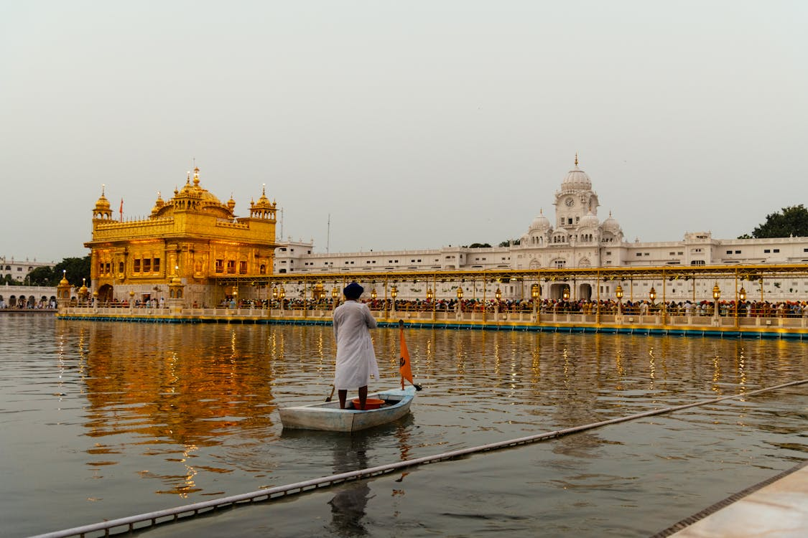
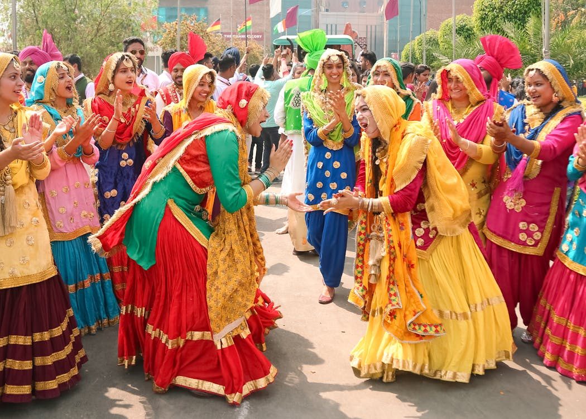
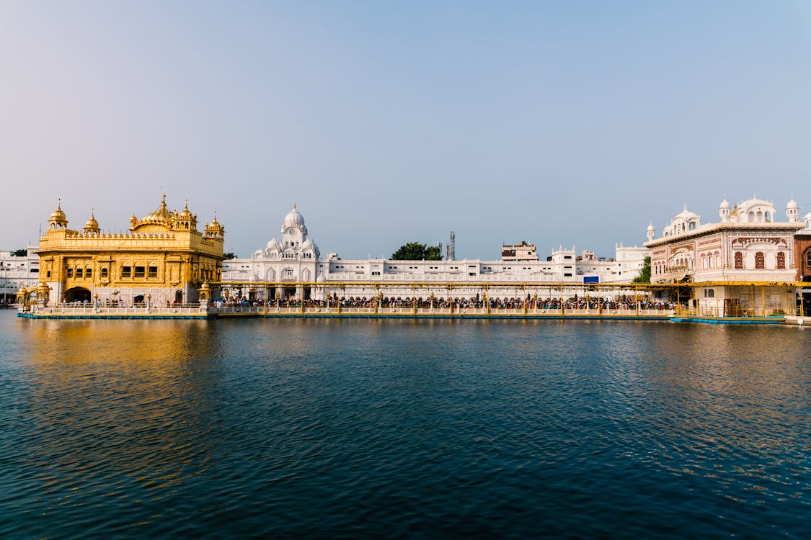
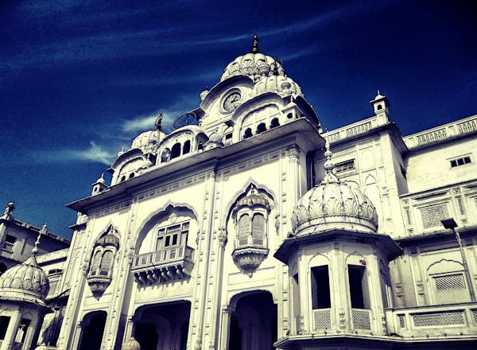

-

Amritsar - Home to the Golden Temple, a spiritual and cultural center, and the historic Jallianwala Bagh.
Chandigarh - A modern, planned city known for Sukhna Lake, Rock Garden, and its vibrant urban design.
Jalandhar - Famous for its Devi Talab Mandir and as a hub for sports goods and manufacturing.
Ludhiana - Known for its industrial significance, rural museums, and the Punjab Agricultural University.
Patiala - A city rich in heritage, famous for the Qila Mubarak complex, Sheesh Mahal, and traditional Patiala attire.
Anandpur Sahib - A sacred town known for Takht Sri Kesgarh Sahib and its significance in Sikh history.
Wagah Border - Located near Amritsar, known for the daily flag-lowering ceremony and patriotic atmosphere.
Bathinda - Known as the City of Lakes, with historical sites like Qila Mubarak and Damdama Sahib.
Pathankot - A gateway to the scenic Kangra Valley and Himachal Pradesh, offering historical and natural attractions.
Kapurthala - Called the Paris of Punjab, famous for its Moorish Mosque, Jagatjit Palace, and scenic beauty.